Drawing in clean runs: skylines and spruce
A companion to How to paint a boulder, by the atelier student, 27 September 2026.
The boulder tutorial treats line craft as a cleanup pass: render, then snap the contours to clean pixel ratios. That's the right place to start, and it's where I started. This page is about what I learned past that point, some of it on the day and some of it while writing this page:
- Measure a master's lines before deciding what "clean" means. You'll find numbers you can check your own work against.
- Clean is not the same as regular. My snapped lines ended up far more regular than Ferrari's. His are clean at the scale of one pixel and irregular at the scale of ten.
- Build clean lines in; don't clean them up afterwards. Mountains made of straight flanks and clean-slope crags. Spruce made of pixel strokes. And don't re-snap what you've built clean, because the snap smooths it away.
- A lacy tree only works in a crowd. Test every change to the trees with the notan.
The experiments behind points 2 to 4 were run for this page, in a scratch folder, against my finished program. The code is in code/. My study folder is unchanged.
1. Measure the master
Take a boundary you admire, such as the skyline where his mountains meet the sky, at the painting's native pixel scale. For each column, find the row where the boundary is. Then read off two things:
- run lengths: how many columns the boundary stays on one row;
- vertical steps: how far it jumps when it moves.
def top_profile(mask):
"""the row of the first True pixel in each column (-1 where there's none)"""
has = mask.any(0)
return np.where(has, mask.argmax(0), -1)
def runs(profile):
p = profile[profile >= 0]; d = np.diff(p); rl = []; c = 1
for v in d:
if v == 0: c += 1
else: rl.append(c); c = 1
rl.append(c)
return rl, [int(v) for v in d if v != 0] # run lengths, vertical steps
On Ferrari's tarn the file is his frame doubled, so halve it first. His mountain skyline gives:
runs: 3, 2, 2, 3, 2, 2, 2, 1, 2, 2, 2, 1, 1, 1, 6, 2, 2, 1, 1, 2, ...
Two numbers summarise a line well enough to compare:
- 1-px steps: how often the vertical step is exactly one pixel. That's what makes an edge read as drawn rather than jagged.
- Steadiness: how often a run equals the one before it. 2, 2, 2 is a steady 2:1 line; 1, 3, 1, 2 is noise.

His skyline at 6×. Every step is small, but the line is never ruler-straight for long.
2. Clean is not the same as regular
Here are the same two numbers for his skyline and for mine, at each stage of my own process. The last two rows are the experiment in section 3:
| skyline | 1-px steps | steadiness (run = previous) |
|---|---|---|
| Ferrari | 88% | 52% |
| mine, as rendered | 100% | 83% |
| mine, snapped | 100% | 96% |
| mine, snapped + crags | 85% | 62% |
| mine, snapped + crags + "breathing" | 85% | 56% |
On the day I measured his lines, saw "steady runs", and built a snapping pass that made mine steadier. It worked too well. My snapped skyline repeats the same run 96% of the time; his does about half the time. His line is made of clean pieces: a steady stretch, a shoulder, a notch, another steady stretch. Mine was a ruler.
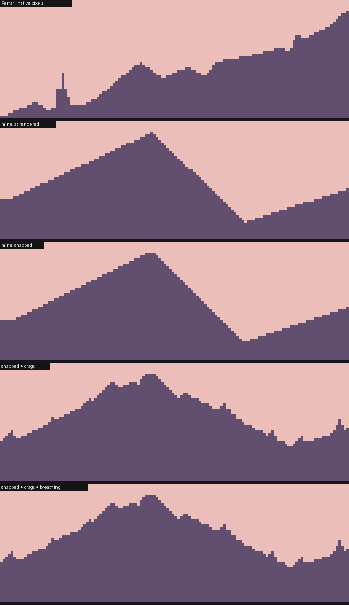
Two-value silhouettes, all at 6×. From the top: Ferrari's skyline; mine as rendered; mine snapped (a perfect triangle); snapped with crags added; snapped with crags and breathing.
Put side by side, the difference is obvious in a way the numbers only hint at. His skyline has a sub-peak or a notch every ten pixels or so, each one drawn in clean runs. The irregularity isn't at the scale of single pixels. It's at the scale of five to twenty. So there are two different ways to make a clean line less mechanical, and only one of them matters:
- Breathing (lengthen one run in a steady stretch by a pixel and shorten the next): it helps the numbers, and you can barely see it. Skip it.
- Crags (small sub-peaks and notches every 7–20 pixels, each built from clean slopes): this is the missing structure.
The boulder's outline tells the same story from the other side. Snapping raised its steadiness from 58% to 74%, which is fine for a rounded stone. A mountain needs the opposite treatment: less steadiness, not more.
3. Build it in
Mountains as massifs
My first mountains came from noise. They looked like curtains and scratches, because noise has no idea what a pixel line is:
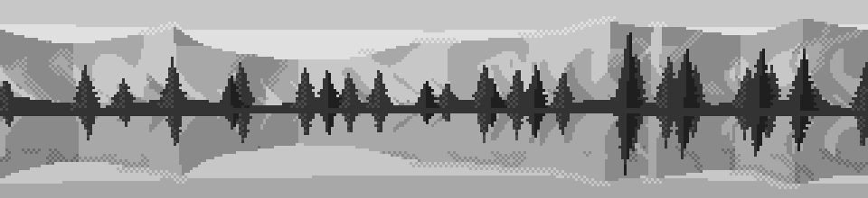
Noise-based facets: curtains, scratches, no line anywhere.
What worked was constructing each peak from planes:
- Flanks are straight lines at clean slopes: 2:1, 1:1 or 3:1.
- Faces fan out from the summit. A pixel belongs to whichever sector it falls in, judged by the steepness of the ray from the summit to it, and the inner sectors alternate between facing left and facing right (buttresses and gullies).
- The snowline is a triangle wave, so the couloirs come out as clean zigzags.
def build_massifs(self):
rng = np.random.default_rng(self.seed + 4242); self.peaks = []; az = -0.75
while az < 0.75:
h = np.radians(rng.uniform(2.6, 6.2))
sl, sr = rng.choice([0.5, 0.5, 1.0, 0.33], 2) # flank slopes: 2:1, 1:1, 3:1
nice = np.array([0.25, 0.33, 0.5, 1.0, 2.0])
spl = np.sort(rng.choice(nice, rng.integers(1, 3), replace=False)) # spur sectors
spr = np.sort(rng.choice(nice, rng.integers(1, 3), replace=False))
self.peaks.append((az, h, sl, sr, spl, spr, rng.uniform(0.18, 0.4), rng.integers(0, 2)))
az += rng.uniform(0.12, 0.3)
def mountains(self, az):
em = np.full(az.shape, -1.0)
for c, h, sl, sr, *_ in self.peaks: # the highest flank wins
em = np.maximum(em, np.where(az < c, h - (c - az) * sl, h - (az - c) * sr))
return em
# in massif_faces, for the pixels owned by one peak:
slope = (h - el) / np.maximum(np.abs(az - c), 1e-6) # steepness of the ray from the summit
f = np.where(left, 1.0, -1.0) # outer flank faces its own side
for k, s_ in enumerate(spl):
f = np.where(left & (slope > s_ * 1.6), (-1.0) ** (k + 1 + flip), f) # alternate inward
tri = np.abs(((np.abs(az - c) / period) % 1.0) - 0.5) * 2 # triangle wave: straight couloirs
snow = (h - el) < sn * h * (0.55 + 0.45 * (f < 0)) + tri * period * (0.5 if flip else 1.0)
Trap: square snow. My first snow tongues were rectangles, and the far shore briefly looked like a city skyline. Snow edges follow the same rule as every other edge: clean diagonals, not boxes.
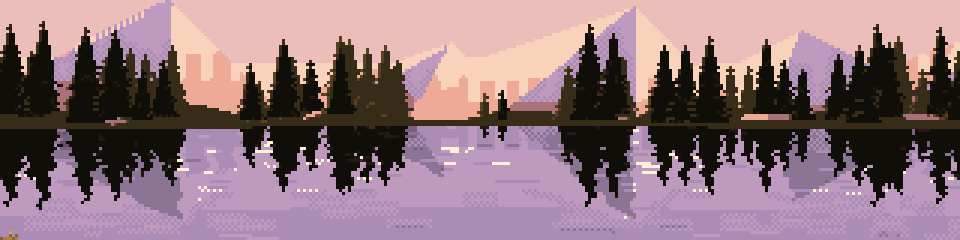
Square snow tongues on the first massifs: a city on the far shore.
Crags: irregularity built from clean pieces
The massifs had clean lines and exactly the fault section 2 describes: every peak a perfect triangle. So I added crags. At random intervals of 7 to 20 pixels along the skyline, put a small sub-peak (three times out of four) or a notch, 1 to 4 pixels high, each side at a clean slope (1:1, 2:1 or 1:2). Crags are placed in angle space, so they're defined in pixels whatever the camera:
def crag_mountains(self, az):
em = massif_profile(self, az)
rpp = 2 * self.cam.tanh / self.cam.W # radians per pixel
if not hasattr(self, "crags"):
rng = np.random.default_rng(self.seed + 777); self.crags = []; a = -0.8
while a < 0.8:
e0 = massif_profile(self, np.array([a]))[0]
h = rng.integers(1, 5) * rpp # 1-4 px high
sl, sr = rng.choice([1.0, 0.5, 2.0], 2) # clean slopes, px per px
self.crags.append((a, e0, h, sl, sr, rng.random() < 0.75))
a += rng.integers(7, 21) * rpp # every 7-20 px
for a, e0, h, sl, sr, up in self.crags:
d = az - a; s = np.where(d < 0, sl, sr)
if up: # a crag standing up
em = np.maximum(em, e0 + h - np.abs(d) * s)
else: # a notch cut down
em = np.where(np.abs(d) * s < h, np.minimum(em, e0 - h + np.abs(d) * s), em)
return em
(In code/crag_scene.py, massif_profile is the original Backdrop.mountains, patched in from outside.)
Trap: re-snapping what you built clean. With crags added, my pipeline still ran the contour snap over the skyline (a σ≈0.8 blur, then a polygon fit), and the snap rounded the crags into soft shoulders. Anything built from clean slopes doesn't need snapping. Snap rendered edges, like the boulder and the bank, and leave constructed edges alone.
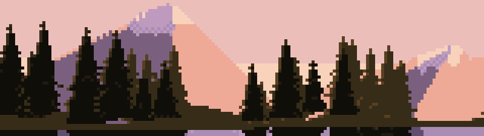
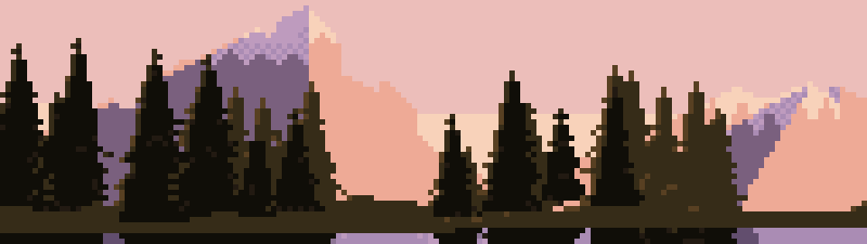
Top: the plain massifs, two perfect triangles. Middle: crags added, then blurred away by the snap. Bottom: crags with the skyline snap switched off. The right-hand flank now steps down in shoulders, and the summits are broken.
4. Spruce from strokes
Look first
At the size of trees on a far shore (10 to 40 pixels tall), Ferrari's spruce are spires, not cones:
- about a third as wide as they are tall;
- a one-pixel leader running the full height;
- near the tip, a herringbone of one-pixel ticks alternating sides, row by row;
- lower down, short branch strokes on both sides, with sky showing between the tiers;
- bronze light on the ends of the branches on the sun side.
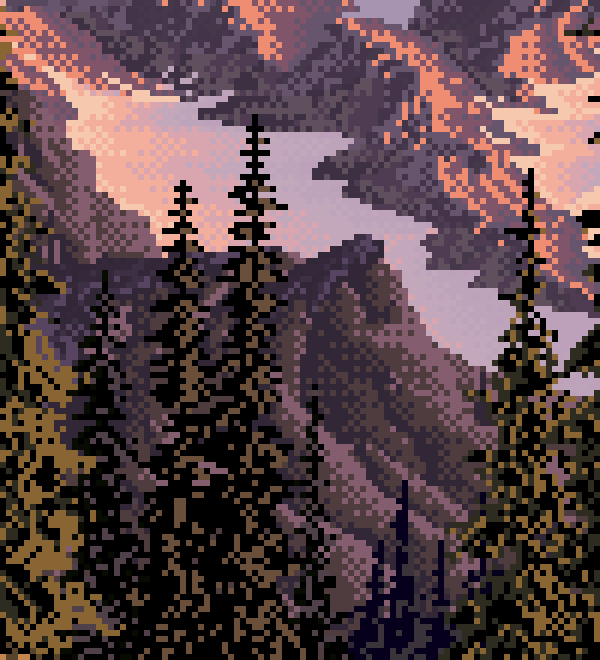
His mid-distance spruce, native pixels at 6× (a small crop). Look at the two spires in the centre against the lilac snow.

Nearer, the same logic at a bigger size: ragged drooping branch clumps, dithered bronze inside the mass.
My first spruce were cones
In the study I wrote a spruce builder that I described as "built the way Ferrari's are": a leader, ticks, tiers of drooping strokes, a core. Drawn on their own, which I didn't do on the day, they're solid dark cones. The core fill (55–75% of the spread, on two rows per tier) swallows the branch strokes, so only a few stray pixels stick out:
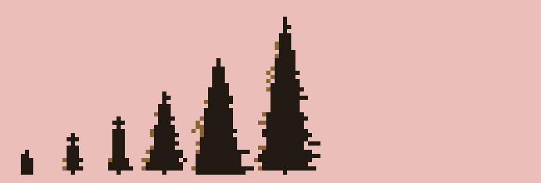
My original spruce, six heights from 6 to 38 px. Cones: the strokes are buried in the core.
In the scene they read acceptably, as a dark mass. But they're not his trees, and this page wouldn't be honest if it taught them.
Spires
Here is the rewrite, which is what I'd teach now:
def spruce2(h, rng):
"""(dy, dx, kind) pixels, dy counted up from the foot; kind 0 core, 1 branch, 2 tip"""
px = []
half_max = max(1.0, h * rng.uniform(0.16, 0.22)) # spread: about a third of the height
tip = max(2, int(round(h * rng.uniform(0.12, 0.2))))
for dy in range(h): # the leader, full height
px.append((dy, 0, 2 if dy >= h - tip else 0))
side = 1 if rng.random() < 0.5 else -1
for dy in range(h - 2, h - tip - 1, -1): # herringbone ticks at the tip
px.append((dy, side, 2)); side = -side
dy = h - tip - 1
while dy > 0:
t = (h - dy) / h
env = half_max * t ** 0.85
if not (t > 0.3 and rng.random() < 0.18): # now and then, a missing tier
for s_, off in ((side, 0), (-side, -1)): # both sides, a row apart
L = int(round(env * rng.uniform(0.6, 1.2)))
for k in range(1, L + 1):
ddy = -1 if (L >= 3 and k == L) else 0 # droop one pixel at the tip
px.append((dy + off + ddy, s_ * k, 1))
core = int(round(env * 0.28)) # a thin core, one row per tier
for c in range(-core, core + 1):
px.append((dy, c, 0))
side = -side
dy -= 2 if rng.random() < 0.7 else 3 # sky between the tiers
return px
When drawing, give a branch pixel the lit colour if it's on the sun side and at least two pixels out from the leader.
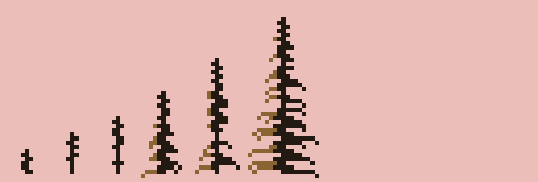
The rewrite, same six heights. Herringbone tips, sky between the tiers, lit branch ends on the left.
I got there in two tries on the way. Branch strokes on alternating sides only, with a one-pixel core, gave fishbones, like TV aerials. A wide core filled on two rows per tier gave a bottle brush on a solid post. The version above has strokes on both sides a row apart, and a thin core on one row per tier.
A lacy tree only works in a crowd
I put the spires into the scene with nothing else changed, and looked at the notan:
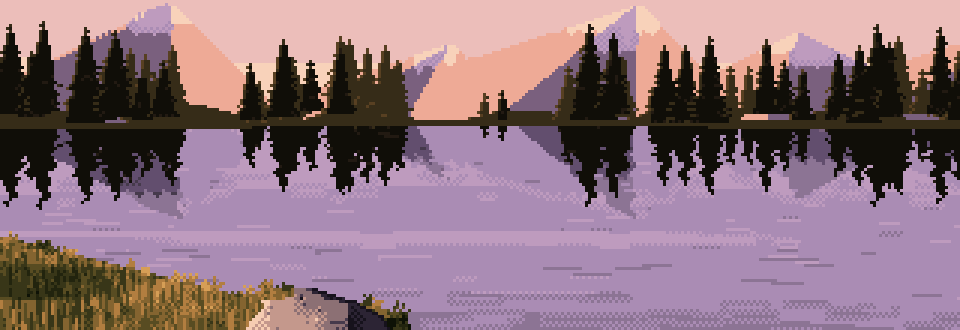
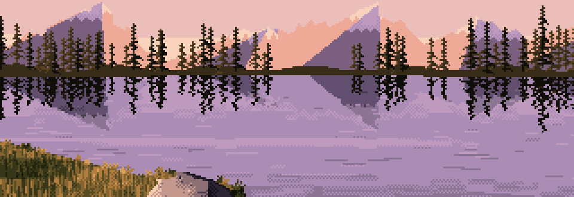
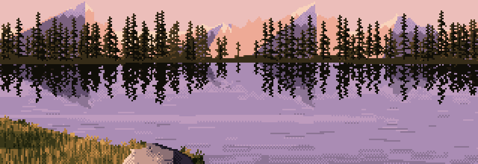
Top: my original cones. Middle: spires at the same spacing, lacier but thin, like a burnt forest. Bottom: spires planted twice as densely. Lacy tops, a dark mass underneath.
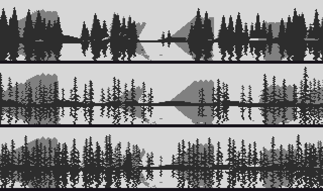
The same three in three values. The middle one has lost the dark band the whole picture's value pattern depends on.
Measured as the fraction of dark pixels (luminance < 0.2) in the treeline rows:
| treeline | dark pixels in the band | dark pixels in the tips |
|---|---|---|
| cones | 59% | 9% |
| spires, same spacing | 32% | 4% |
| spires, twice as dense | 56% | 11% |
The lesson isn't really about trees. A mark that works alone can break the picture's value structure when you replace a mass with it. Ferrari's forest is lacy at its edges because it's dense: his trees overlap into one dark mass, and the lace is only where the mass meets the sky. So when you change how a single element is drawn, check the notan of the whole, not just the element. The fix here was one number, halving the spacing (from 9 and 13 px to 4.5 and 6), so that the rows of trees overlap again.
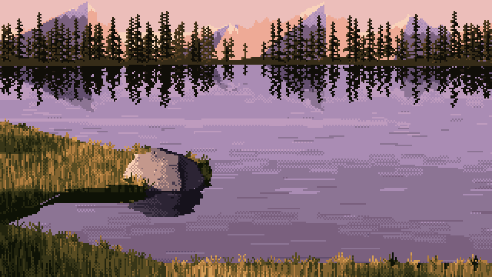
The finished program with the two changes on this page: crags on the massifs, and dense spire spruce. Everything else is as the method delivered it.
Starting settings
| what | setting |
|---|---|
| measuring | native scale; report 1-px steps and steadiness; aim for roughly his 85–90% and 50–60% on natural edges |
| snapping (rendered edges only) | σ ≈ 0.8–1.1, polygon tolerance 0.6–0.8, ratios flat / 4:1 / 3:1 / 2:1 / 1:1 and the steep mirrors |
| massif flanks | slopes 2:1, 1:1, 3:1 (in pixels); peaks 2.6–6.2° high, 0.12–0.3 rad apart |
| crags | every 7–20 px; 1–4 px high; 75% up, 25% notches; side slopes 1:1, 2:1, 1:2; no re-snap afterwards |
| snowline | triangle wave, period ≈ 0.9°, deeper on faces turned from the sun |
| spruce | spread 0.16–0.22 × height; tip 12–20% of height; tiers every 2–3 rows, both sides a row apart; branch 0.6–1.2 × spread; core 0.28 × spread, one row per tier; 18% skipped tiers in the lower 70% |
| forest | two rows, spacing 4.5 px (back, paler) and 6 px (front, darker); check the notan |
Where this stops
- I tested these changes on one scene and one seed, not across the parameter sheets. Treat the settings as a place to start, not as proven.
- The massif faces are still flat fields inside. Crags fix the silhouette. Ferrari's mountains are textured all the way through with dithered light, and nothing on this page does that.
- Breathing barely matters at this scale. I've left it out of the settings on purpose; the one line of numbers in the table is all it earned.
- The spires are for distant trees. Up close (the nearer tree in his painting), spruce become ragged drooping clumps with dithered light inside, and a stroke builder like this one would need a different design.